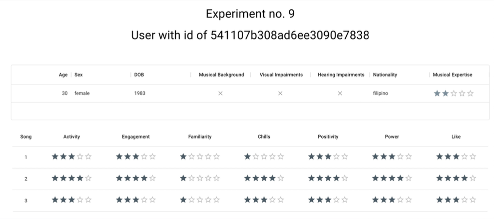
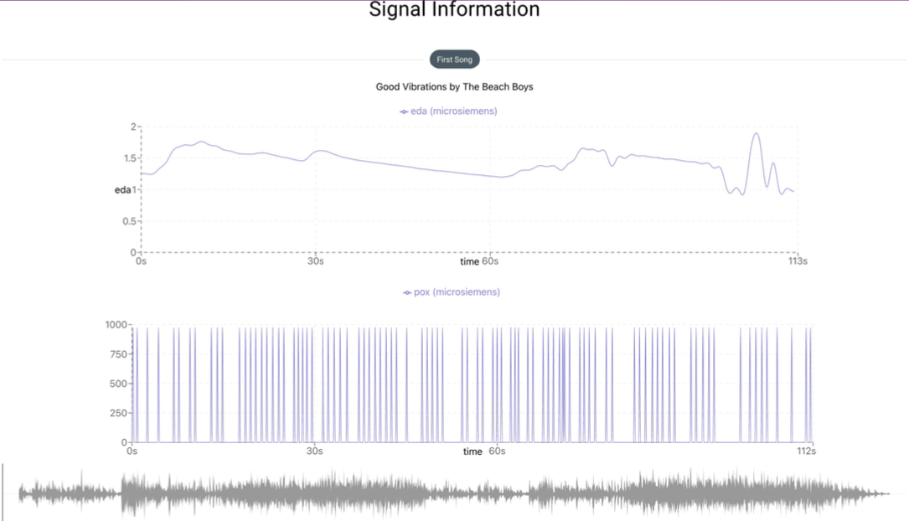
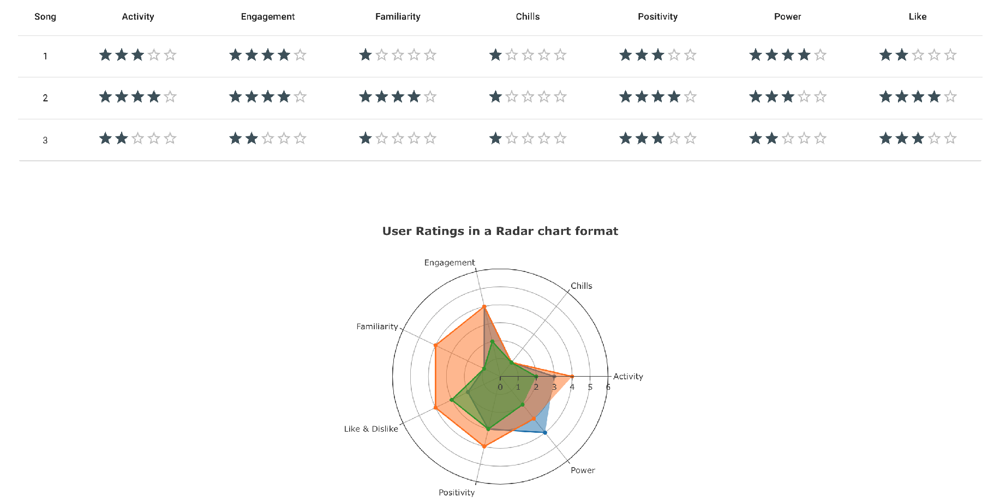
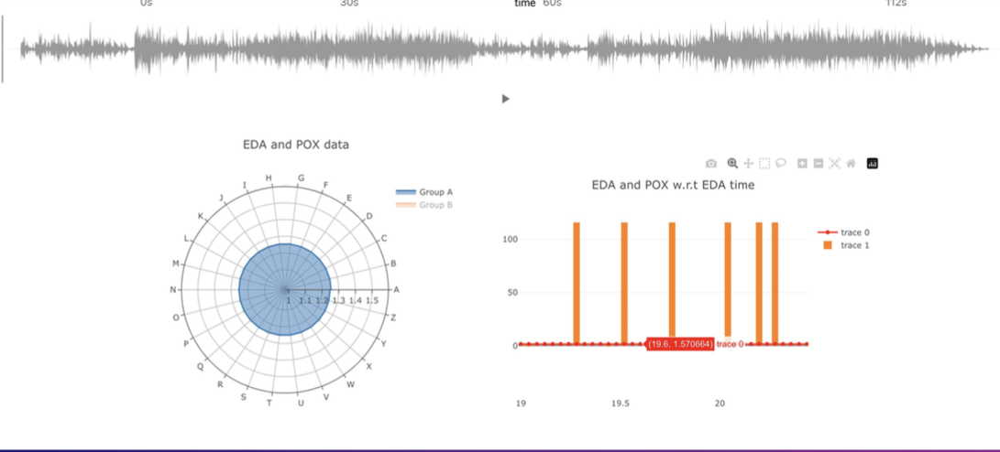

Deciphering Emotional Responses to Music: A Fusion of Psychophysiological Data Analysis and LSTM Predictive Modeling
This paper presents a comprehensive study on the utiliza- tion of the “Emotion in Motion” database, the world’s largest
repository of psychophysiological data elicited by musical stimuli. Our work is cen- tered around three key endeavors.
First, we developed an interactive online platform to visualize and engage with the database, providing a user-friendly
interface for researchers and enthusiasts alike to explore the intricate relationships between music and physiological
responses. This platform stands as a significant contribution to the field, offering novel ways to interact with and interpret
the complex data. Second, we conducted an analysis of the rating based emotional responses and the EDA signals from the
participants with and without hearing impairment. Additionally, we conducted an in-depth correlation analysis of the
physiological signals using Dynamic Time Warping within the database. By categorizing the data into two main genres of music
— classical and modern — and further subdividing them into three age-specific groups, we gleaned valuable insights into how
different demographics respond to varied musical styles. This segmentation illuminated the nuanced interplay between age,
music genre, and physiological reactions, contributing to a deeper understanding of music’s emotional impact. Finally, we
developed a predictive model using Long Short-Term Memory (LSTM) networks, capable of processing Electrodermal Activity (EDA)
and Pulse Oximetry (POX) signals. Our model adopts a sequence-to-vector prediction approach, effectively fore-casting seven
distinct emotional attributes in response to musical stimuli. This LSTM-based model represents a sig- nificant advancement in
predictive analytics for music-induced emotions, showcasing the potential of machine learning in deciphering complex human
responses to art. Our work not only provides novel tools and insights for analyzing psychophysiological data but also opens
new avenues for understanding the emotional power of music across different demographics, ultimately bridging gaps between
music psychology, physiology, and computational analysis.
Few Screenshots from the project are as follows.
*Note: All of the views below are synced with each other in a Coordinated Multiple view (CMV) fashion



